Un jeu de rôle hopepunk dans un univers de fantasy inspiré du japon médiéval, où les joueurs incarnent des komusō, ayant fait vœu d’aider la population, et où des créatures nommées mushis ont donné naissance à la magie.
Inspirations: Mushishi, Le château dans le ciel, Shadow of the Colossus, Avatar le maître de l’air, Naruto, Princesse Mononoké, Le Voyage de Chihiro, Full Metal Alchemist, Zelda…
- Version PDF de ces règles: OriMushi.pdf (19 pages, 4,4 Mo)
- Feuille de komusō : FeuillePersonnage.pdf
- Aides de jeu :
- Feuille de komusō pour partie de 30min : FeuillePersonnageExpress.pdf
- Articles sur mon blog à propos de ce jeu : tag ori-mushi @ chezsoi.org
Sommaire
- Les terres connues
- Histoire
- Géographie & peuples
- Bestiaire
- Factions
- Vocables
- Les joueurs incarnent des komuso
- Former un groupe
- Jets de dés
- Santé
- Boucle de jeu
- Oris & progression
- Mystika
- Merveilles
- Autour du feu
- PNJs
- Griddish
- Ressources
- Illustrations sélectionnées - non encore placées
- Glossaire
- Toutes les idées qui n’ont pas pu aboutir dans cette version
- Licence, sources & remerciements
Les terres connues
Le monde d’Ori Mushi est une forme de Japon médiéval avec des éléments fantastiques :
- la magie existe, elle opère par la parole, et est enseignée à travers différents Vocables. L’énergie magique provient du Mana, provenant des mushis, des créatures élémentaires invisibles…
- tout individu possède un potentiel malveillant enfoui, un Oni, qui peut s’éveiller, le dévorer et le transformer en démon.
- les komusō sont un ordre respecté dans toutes les terres connues.
Les terres connues comportent encore de nombreuses traces des Temps Antiques, une ère dont les légendes sont encore très présentes dans les esprits, inspirée des mythes greco-romains et égyptiens.
Histoire
Les temps antiques
Il y a environ mille ans :
- les dragons veillent sur le monde et guident les empereurs.
- cette époque voit les plus grandes merveilles être conçues : la Cité aux Mille Pages, une véritable ville-bibliothèque; le Théâtre des Cieux de l’artisan-ingénieur Vitruve, immense et mobile; la Tour de l’Infini…
- la Sculpteuse de Mots conçoit initialement les Colosses pour qu’ils déclament à travers les terres connues les Versets du Poète Endeuillé. Elle transmet à ses disciples la magie du Verbe.
- fondation de l’ordre des komusō, les Prêtres du Vide
La Guerre de l’Oubli
Il y a environ un siècle :
- une armée de Onis, des démons, ravage les terres connues, menés par l’empereur fou, Enkidu. Ils massacrent les dragons, ainsi que tout un peuple : le peuple éteint. Les grandes merveilles disparaissent.
- les premiers Poètes-Sorciers maîtrisent la magie du Verbe, et transmettent leurs Vocables pour lutter contre les Onis.
- les Onis sont finalement vaincus. Certains disent grâce à un enfant, Gilga, qui commandait aux Colosses. D’autres racontent qu’ils ont été enchaînés dans les cœurs des hommes.
Récemment
Ces dernières années :
- une épidémie se répand, le Fléau Impassible, qui pétrifie progressivement les malades en statues de pierre
- Hisaishi Inoue, capitaine en chef des bateliers, a alerté les terres connues sur la recrudescence d’Onis à nouveau
- Oma la Cueilleuse de Mots, une Poétesse-Sorcière, a été élue par les forestiers pour remplacer le précédent empereur des Basses Plaines. Elle siège au conseil des sages de la ville de Nippur.
- l’Empereur des Hauts Plateaux est mort, de tristesse à ce qu’on raconte, sans descendance.
Géographie & peuples
Ces lieux & régions sont des points de repère essentiels dans les terres connues :
- les Basses Plaines : région de vallées verdoyantes et de nombreuses rivières. Deux peuples y cohabitent : les forestiers, qui mènent une vie sédentaire rurale; et les bateliers, nomades dont les escadres de chars à voile se déplacent aussi bien dans les plaines herbeuses que sur la mer. Nippur est la capitale de la région forestière.
- les Hauts Plateaux : région montagneuse, découpée en de multiples provinces. L’Église de la Connaissance y est très influente, promouvant un progrès scientifique et industriel.
- Uruk est la plus grande ville des Hauts Plateaux, capitale du Pays de la Mer. D’immenses industries s’y sont installées le long de ses immenses falaises.
- Bilgamesh est un Colosse encore actif, un géant humanoïde qui arpente les Basses Plaines. Une épreuve de courage des bateliers est de l’escalader.
- de nombreux temples et monastères parsèment les terres connues. Parfois très anciens, ils ont été érigés pour vénérer des divinités shintoïstes. La plupart sont aujourd’hui devenus des lieux dédiés aux Sciences, où diverses écoles de Moines-Scientifiques s’isolent pour approfondir leurs théories, dans des domaines aussi variés que l’astronomie, la botanique, la philosophie, les mathématiques… La majorité sont affiliés à l’Église de la Connaissance, mais pas toutes.
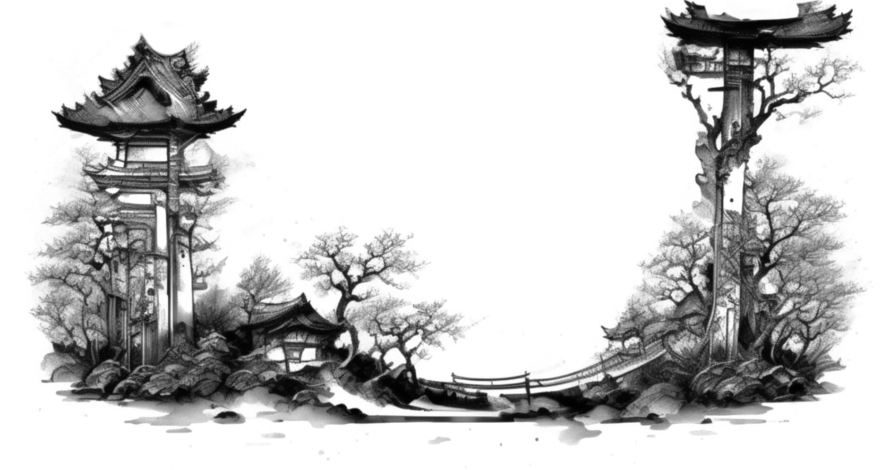
Les terres connues ne sont volontairement pas décrites en détails afin de :
- vous permettre, MJ & joueurs, de les détailler par petites touches, au fur et à mesure de vos parties.
- d’inclure toutes les références que vous souhaitez à des univers de fiction existants, qu’il s’agisse de lieux, de personnages, d’organisations…
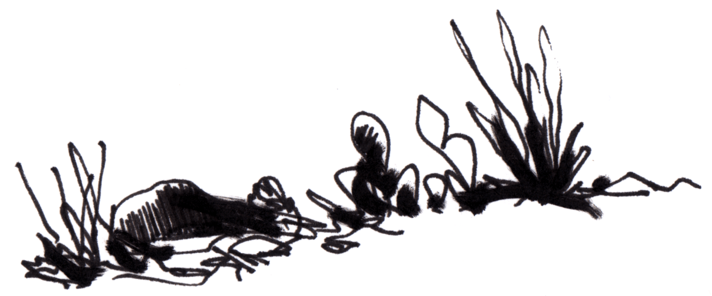
Bestiaire
Les terres connues comportent de nombreuses créatures étranges et mystérieuses…
Mushis
Un mushi est un organisme vivant invisible aux yeux des humains. Il en existe de différentes espèces, et ils tissent des liens essentiels avec les autres êtres vivants, de manière symbiotique : tantôt sources de nourriture, tantôt protecteurs de plantes et d’animaux.
Les mushis ne semblent pas doués de conscience. Ils ne sont ni mauvais ni bienveillants, mais contribuent à l’équilibre des environnements naturels où l’homme est absent.
Bien qu’invisibles, leurs morphologies sont tantôt semblables à des plantes, à des insectes, à de petits oiseaux, ou à des champignons.
Les mushis produisent naturellement du Mana, l’énergie permettant la magie. La plupart réagissent à la musique, aux métaux argentés, et à la lune : certains se reproduisent en émettant des spores durant les nuits de pleine lune. où ils convergent et se réunissent en masse à certains endroits mystérieux. On appelle cela un banquet de mushis.
Mot-clefs : invisible, étrange, nature, symbiose, fragile, paisible, surnaturel
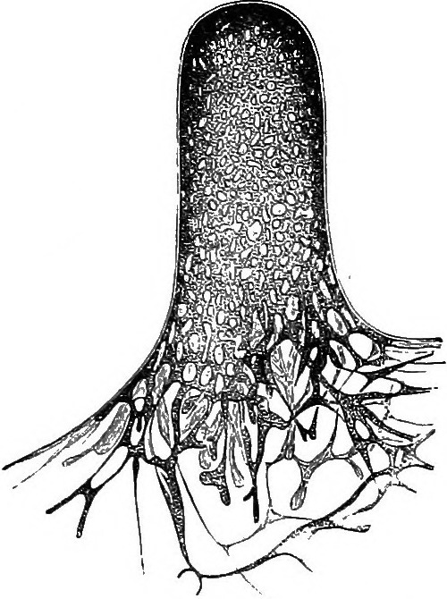
Codex mushi
Les joueurs dans le groupe qui jouent des Mushishis se voient remettre une feuille de Codex mushi vierge. S’il y a deux Mushishis, chacun reçoit un Codex vide, et les joueurs se répartissent les six familles entre eux, afin de se spécialiser chacun dans trois d’entre elles. Si le groupe ne comporte aucun Mushishi, alors la tenue du codex est à la charge de l’ensemble des joueurs.
Le MJ dispose également du Codex mushi complet, contenant les détails de tous les mushis connus. Le MJ est également libre d’en imaginer d’autres. Les Mushishis en inventent eux-même de nouveaux à la seconde phase de leur Voie.
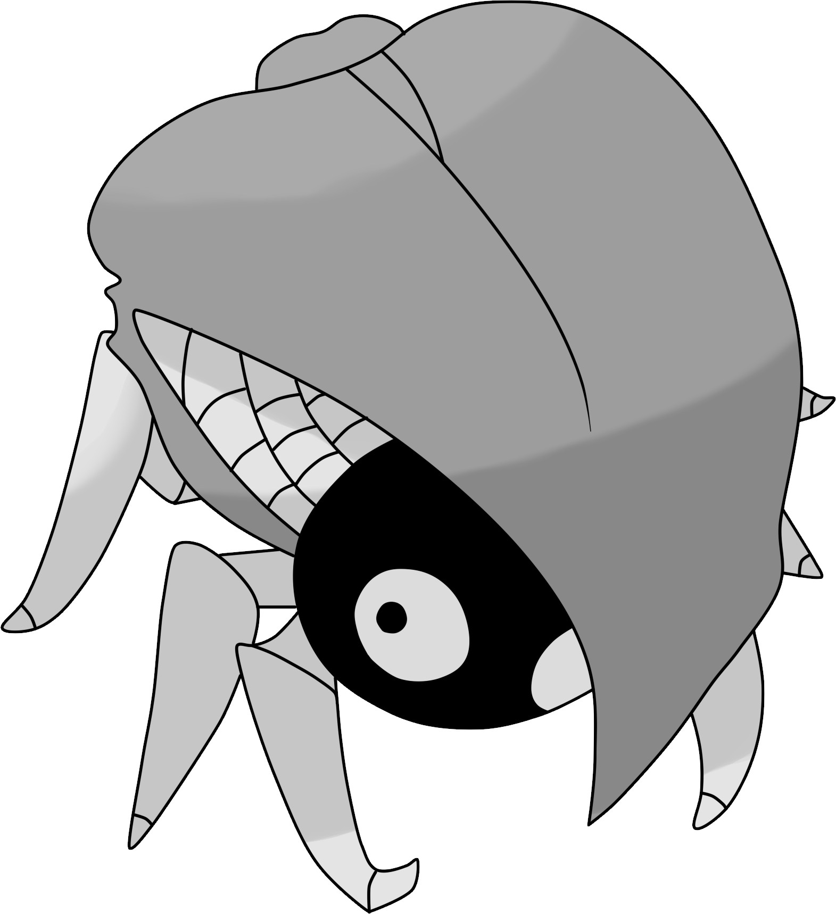
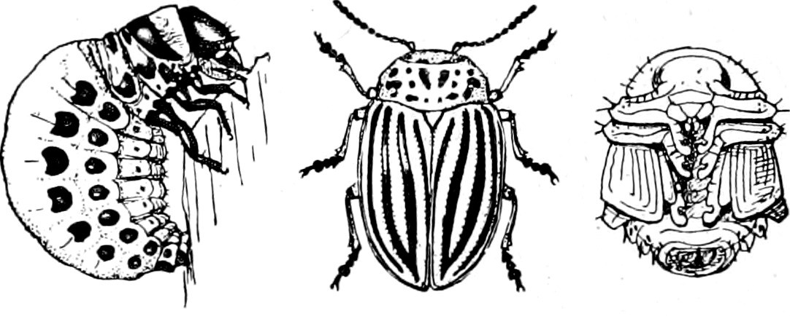
Onis
Dans les terres connues, tout individu possède un démon intérieur, un Oni. Ce Oni se nourrit de colère, de frustration, de peurs.
Chez la plupart des gens, ce Oni reste en sommeil et ne se développe jamais.
À l’inverse, certains individus choisissent de nourrir ce Oni, pour obtenir en échange une grande puissance. Cette voie mène néanmoins à une transformation en un véritable démon.
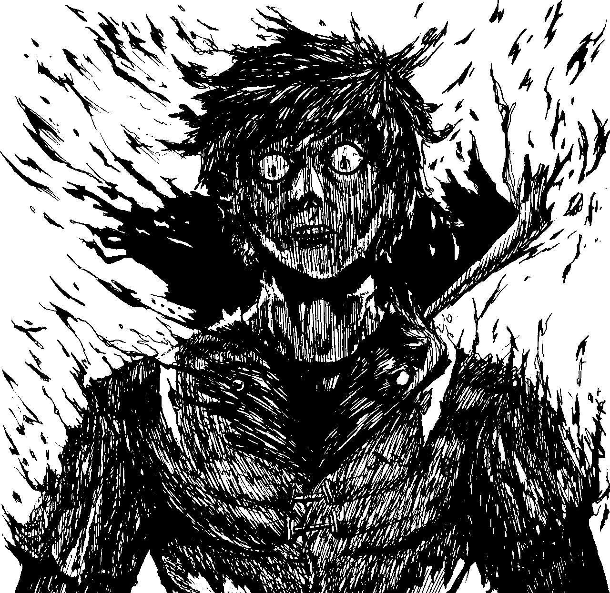
Mot-clefs : enragé, hurlement, bestial, monstre, terrifiant, agressif, sidérant, danger
Que sont les Onis ?
Des humains ayant accepté d’accueillir en eux un mushi parasitique.
Ce mushi leur confère une force surhumaine, ainsi qu’une impulsivité colérique terrible.
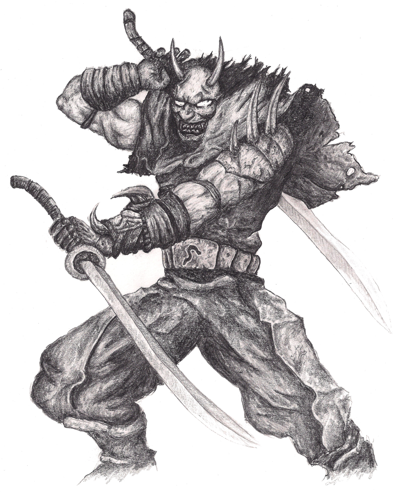
Comment se comportent les Onis ?
Ils ont souvent choisi d’accueillir le mushi pour obtenir quelque chose en échange : se venger, battre quelqu’un, prendre le pouvoir…
Parfois, ils obtiennent ce qu’ils souhaitaient et en sont satisfaits, devenant des monstres cruels s’assumant pleinement.
Parfois, ils sont en conflit intérieur, n’assumant pas les actes qu’ils ont commis sous l’impulsion du mushi.
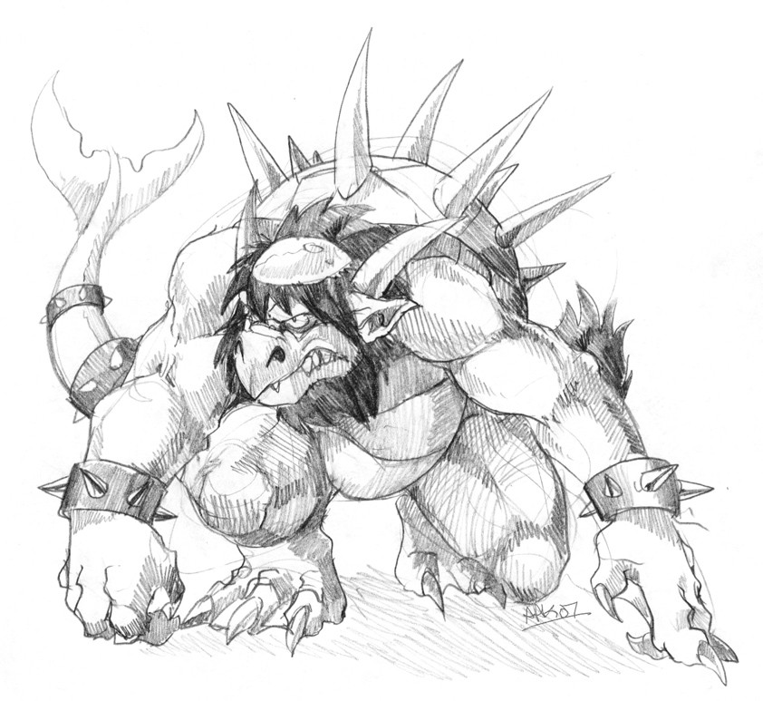
Comment devient-on Oni ?
- des livres détaillent où se rendre, et en quelle saison, pour trouver des fruits de ce mushi, et les ingérer pour devenir Oni
- Gilga distribue des graines onimame, sous différents prétextes, qui transforment les gens en Onis
Peut-on "soigner" un Oni ?
Une fois le mushi accueilli en soi, il n’existe que deux solutions pour ne pas être consumé par lui :
- le transmettre à un autre humain volontaire
- l’apprivoiser -> inspi manga Parasite ?
Colosses
Ce sont de gigantesques et mystérieux géants de pierre, en partie sculptés. Certains sont endormis, d’autres errent, répétant des gestes ou des trajets dont le sens s’est perdu à travers les âges…
Peu de choses sont connues sur ces statues géantes. Ils réagissent à la musique, en général en l’écoutant, et parfois en répondant par un chant plaintif.
Les Colosses inertes, que plus rien n’anime, semblent être un lieu de prédilection des mushis.
Certains bas-reliefs de temples antiques, ou sur les Colosses eux-mêmes, mentionnent leur lien avec un énigmatique Poète Endeuillé.
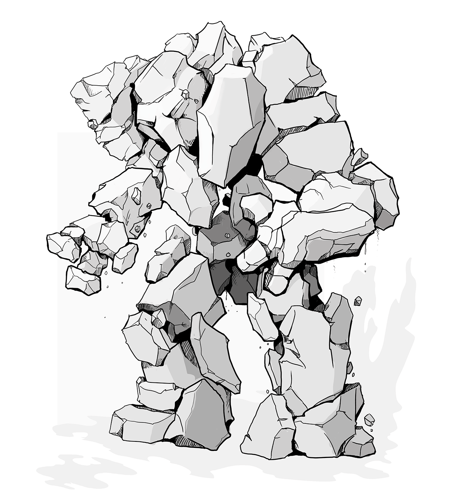
De nombreuses légendes circulent à leur sujet. Certains disent en avoir vu s’affronter. D’autres racontent avoir vu un Colosse entretenir un jardin de fleurs.
Mot-clefs : gigantesque, lent, inarrêtable, massif, antique, minéral, lourd, tremblement, errance
Dragons
Yamata no Orochi : dragon à huit têtes
Autres créatures fantastique
- oiseaux qui ne se posent jamais ailleurs que sur les Colosses
- chien-loups dont la hauteur dépasse trois hommes
Factions
Les Prêtres du Vide
C’est le nom de l’organisation des moines komusō :
- c’est une très ancienne communauté, issue d’une guilde d’artistes errants qui s’est petit à petit structurée en institution, en diversifiant les savoir-faire de ses membres et en établissant un code moral propre autour des Cinq Vœux des komusō
- les Prêtres du Vide développent parfois une certaine spiritualité, mais il ne s’agit pas d’une religion. Il n’organisent pas de culte, ni ne vénèrent de déités précises.
- en tant qu’organisation, les activités principales des Prêtres du Vide sont :
- le développements des arts et la diffusion de spectacles
- la formation et la transmission de savoir-faire
- l’entraide et la solidarité, fournie directement par komusō durant leur service à la population
- l’institution comporte deux niveaux de membres : les komusō, qui en font partie temporairement le temps de réaliser un "service civique itinérant", en honorant les Cinq Vœux des komusō; et les daïmios, des moines ayant choisi de devenir des artistes-sages permanents. L’ensemble de l’organisation est dirigée par un conseil de daïmios élus par leurs pairs, le Cénacle.
Mot-clefs : altruisme, éducation, sagesse, méditation, sobriété
L’Église de la Connaissance
Cette influente institution promeut le progrès scientifique et industriel.
Cette organisation partage certaines caractéristiques d’une religion :
- le progrès technologique est sacralisé, mis en exergue comme la salut de l’humanité, et ses partisans exhortent à avoir foi en la Science et la grande Révolution Industrielle qui se déploie.
- la spiritualité et la magie sont bannies comme des absurdités barbares. Les livres qui y font référence sont brûlés.
- il n’y a pas de texte sacré, mais les écrits scientifiques sont portés aux nues, et célébrés comme les trésors les plus précieux de l’humanité.
Cette institution constitue un réseau très bien organisé :
- différents lieux lui sont dédiés, en ville comme dans des lieux reculés : temples et monastères qui sont autant d’instituts de recherche, mais aussi usines de production et carrières d’extraction de ressources
- une hiérarchie de scientifiques dirige cette église : barons et capitaines d’industrie, cardinal d’université, évêques-ingénieurs…
- l’église encourage les bonnes œuvres, et structure plusieurs initiatives de bienfaisance sociale : aumône, aide alimentaire aux plus démunis, hébergement d’urgence, médecine gratuite, etc.
L’Église de la Connaissance a de nombreux détracteurs, qui lui reprochent notamment sa censure proche d’une Inquisition; la réalisation d’expérimentations sur les défavorisés qui bénéficient de ses bonnes œuvres; la destruction d’environnements et la pollution qu’entraînent les industries intensives qu’elle promeut.
Aujourd’hui, l’église est très influente dans les provinces des Hauts Plateaux, et de plus en plus également dans les villes des Basses Plaines.
Mot-clefs : dogme, rigueur, usines, mécanique, productivisme, steampunk
Le peuple éteint
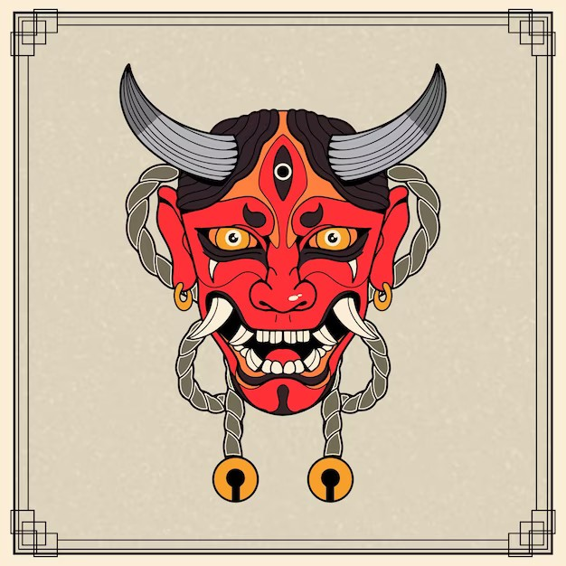
Peuple où le genre n’est pas féminin / masculin, mais Kappa / Tengu. -> les joueurs choisissent par vote l’apparence des Kappa et des Tengu
Mot-clefs : mystérieux, cachés, hors-normes
Vocables
Les Vocables sont des languages mystiques ancestraux permettant de maîtriser différentes formes de magie, correspondant aux familles de mushis.
Voici les principaux Vocables connus :
| Gravité : intensifier ou supprimer la gravité dans une zone proche. | Mimétisme : agir sur les reflets, dupliquer un objet… |
|---|---|
| Perceptif : modifier les perceptions, se rendre imperceptible, avoir une odeur attirante, être effrayant à en hérisser le poil, etc. | Plantes : faire pousser des plantes (arbres, lianes, fleurs…) extrêmement vite, modifier un objet en bois… |
| Sommeil : l’induire ou empêcher de dormir, agir sur les rêves… | Téléportation : déplacement instantané à courte distance de soi, d’un objet, d’un adversaire… |
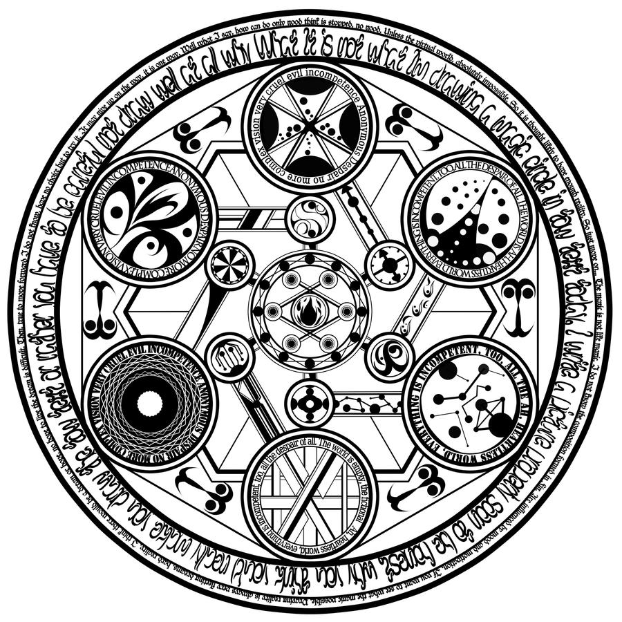
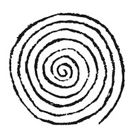
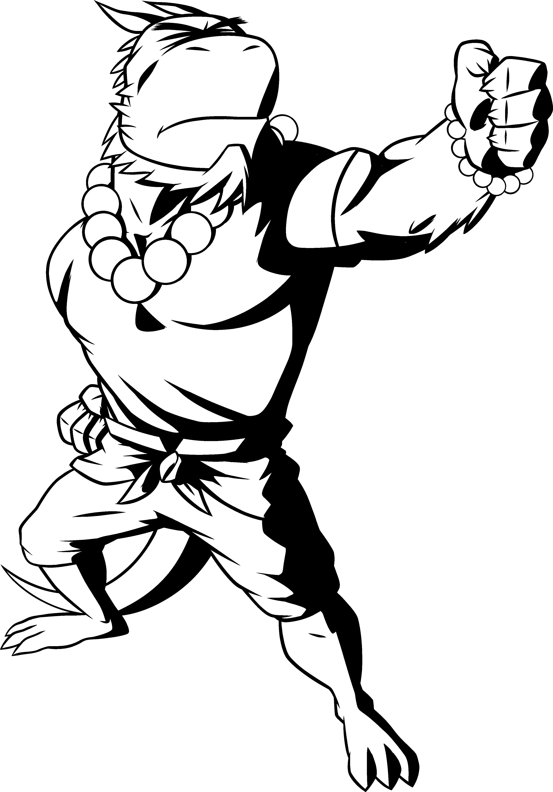
Société communiste, sans notion de propriété propre. -> essayer de dégager quelques caractéristiques originales et marquantes, cf. https://ptgptb.fr/jdr-et-the-righteous-mind
Les joueurs incarnent des komuso
Avant que les joueurs ne créent leurs personnages, informez-les de la nature de leur groupe : il vont incarner des komusō.
Les personnages des joueurs viennent de conclure un apprentissage d’élite (ou leur reconversion) dans un domaine, quel qu’il soit : artisan, savant, sorcier…
En échange de cette formation d’excellence qu’ils ont reçu, ils ont accepté ensuite, pendant un an, d’assumer la fonction de komusō, et pendant un an de constituer un groupe suivant les préceptes de cette charge :
- Vœu d’Errance : un komusō ne reste jamais plus de trois nuits dans un lieu, à moins d’une urgence vitale.
- Vœu de Pauvreté : un komusō ne conserve jamais d’argent pour lui. Il subsiste de la générosité des autres, qui leur offrent en général volontiers le gîte et le couvert. Un komusō peut faire du troc.
- Vœu d’Assistance : un komusō accepte toujours d’aider quelqu’un en difficulté, de lui porter secours.
- Vœu d’Impartialité : un komusō se doit d’être impartial et juste. En cas de conflit, sans qu’ils ne possèdent la moindre autorité officielle, les komusō sont parfois sollicités comme juges impartiaux.
- Vœu de Préserver la Vie : un komusō ira jusqu’à se battre pour une vie. Il protège également la nature, animaux, plantes et autres créatures.
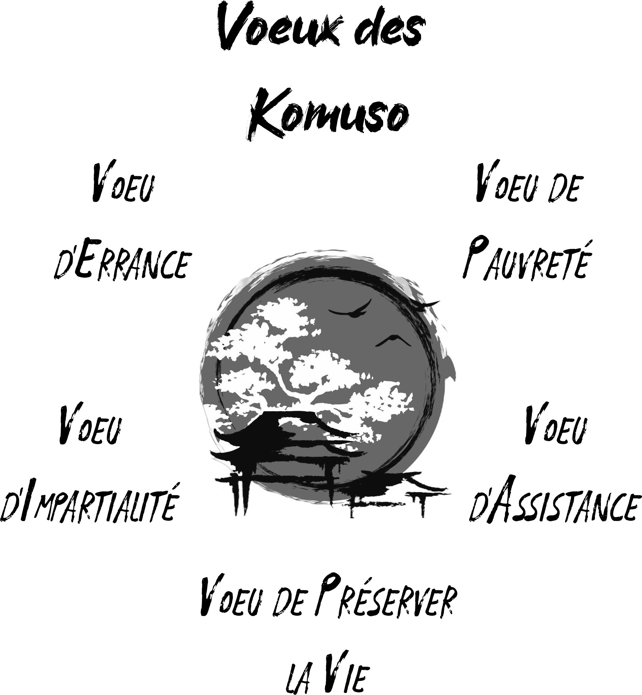
En-dehors de ce code moral, les komusō sont d’origines très diverses. Ils ont souvent des connaissances et des compétences très complémentaires au sein d’un groupe, pouvant parfois même provoquer des tensions.
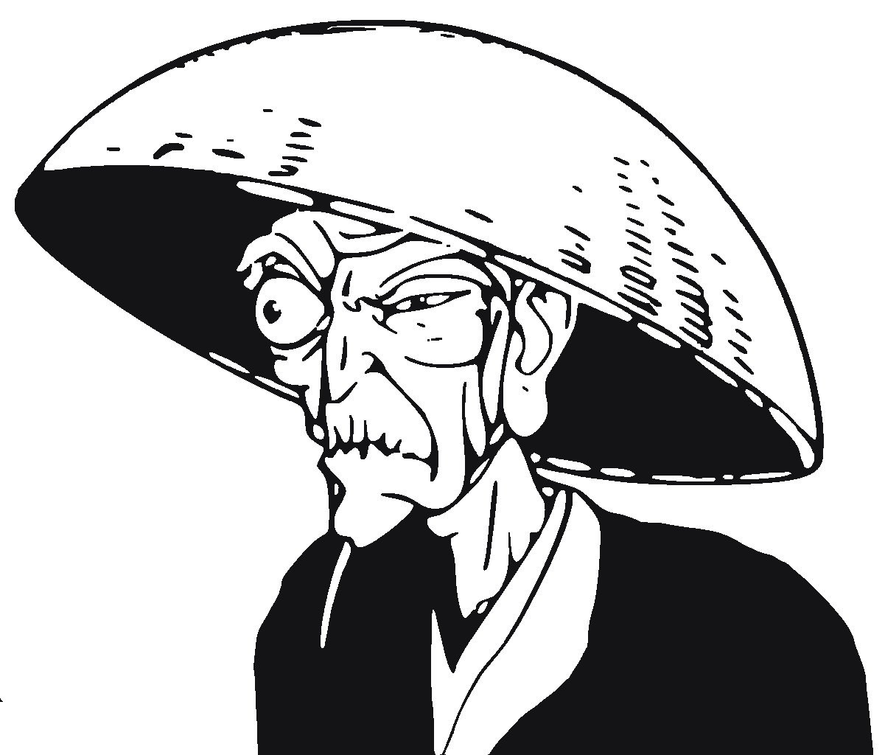
Ils doivent tous respect et obéissance à un daïmio, qui a sélectionné les membres du groupe des komusō, et à qui ils rendent compte. Il peut parfois leur demander d’accomplir certains missions spécifiques.
En particulier le daïmio des komusō des joueurs se nomme Mokabé. Les komusō se connaissent déjà et voyagent ensemble depuis plusieurs semaines.
Au terme de leur mission de komusō, l’appréciation finale du daïmio sera cruciale pour la poursuite de carrière des komusō dans leur activité.
Les Vœux des komusō sont sources de points d’expériences : un joueur sauvant une vie en danger ou épargnant un adversaire meurtrier gagne +1 Ori.
Former un groupe
Il y a deux options pour jouer à Ori Mushi :
- vous jouez avec le même groupe de joueurs, pour une plusieurs parties
- vous jouez en table ouverte, pas toujours avec les même joueurs autour de la table. Ce mode de jeu est détaillé dans le Guide du MJ.
Selon si vous optez pour l’une ou l’autre option, des règles légèrement différentes vont vous permettre de tisser des liens entre les komusō.
Groupe fixe : tisser des liens entre les komuso
Lorsque tous les joueurs ont défini qui est leur komusō, avant de débuter la partie, créez deux liens chaque personnage avec d’autres membres du groupe.
Cette étape se déroule ainsi :
- un premier joueur lance un dé pour déterminer, au hasard, avec quel autre komusō son personnage aura un lien. Le joueur sélectionné devient son partenaire, et lance à son tour un dé afin de déterminer la nature de ce lien, en se référent à la table dédiée. Lorsque les deux joueurs se sont mis d’accord sur le type de lien, la ligne correspondante est cochée dans la table, et ils répondent ensemble aux questions, à tour de rôle, dans l’ordre.
- c’est ensuite au tour du joueur du komusō qui vient d’être tiré au hasard. Ce joueur lance lui aussi un dé pour sélectionner un autre personnage, à l’exception de celui du premier joueur. Ils tirent ensuite au hasard la nature de leur lien dans la table, et répondent aux questions de la même manière.
- le joueur qui vient d’être tiré au hasard effectue lui aussi un jet de dé pour sélectionner un autre personnage du groupe, à l’exception de ceux des premier et second joueurs.
- et ainsi de suite jusqu’au dernier joueur, dont le komusō aura automatiquement un lien avec celui du premier joueur
Liens entre les komuso en table ouverte
Dans ce mode de fonctionnement, vous établissez des liens entre komusō lors de la première partie, mais aussi à chaque fois qu’un nouveau joueur rejoint votre groupe pour jouer, avec son nouveau personnage.
Dans ce cas, le nouveau joueur lance un dé pour déterminer au hasard, avec quel autre komusō présent il aura un lien. Le joueur sélectionné devient son partenaire, et lance à son tour un dé afin de déterminer la nature de ce lien, en se référent à la table dédiée, puis ils répondent aux questions.
Répétez l’opération pour que le nouveau joueur tisse un second lien avec un autre komusō du groupe. Si plusieurs komusō rejoignent le groupe lors de la même partie, essayez de faire en sort qu’ils tissent un lien avec un "ancien" joueur, et un lien avec un "nouveau" joueur.
Lien secret
Le MJ prend en aparté les deux joueurs, et leur révèle que l’un des komusō est un mushi clone de l’autre !
Depuis le clonage, les deux personnages ont probablement adopté des signes distinctifs, les rendant légèrement dissemblables l’un de l’autre. Ou bien peut-être prétendent-ils être jumeaux. Mais ils disposaient en tout cas d’un corps et de souvenirs identiques au moment où le mushi est né.
Depuis, le mushi clone a entièrement est devenu une personne à part entière. Il est complètement indépendant de son modèle et en tous points humain.
Répondez à ces questions :
- quel personnage est "l’original" ? Ou bien l’ignorez-vous ?
- il y a combien de temps le clone est-il né ?
- pourquoi avez-vous décidé de voyager ensemble ?
Jets de dés
Lorsque votre komusō entreprend une action comportant un risque, le MJ demande au joueur de lancer un dé pour déterminer le résultat de cette action :
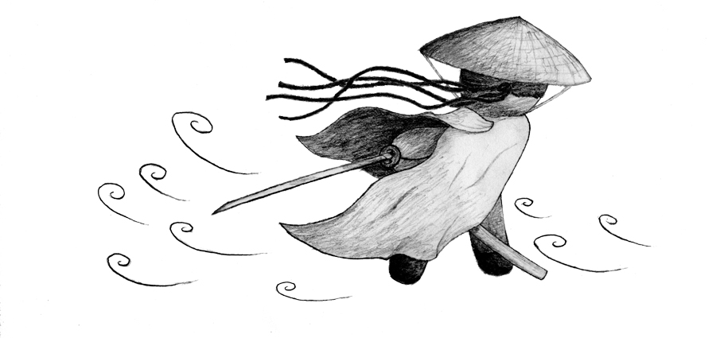
- ⚅ / ⚄ : c’est réussi !
- ⚃ : c’est réussi mais…
- ⚂ : c’est raté mais…
- ⚁ / ⚀ : c’est raté
De plus :
- si deux ⚅ sont obtenus : c’est une réussite épique !
- si deux ⚀ sont obtenus : c’est un échec critique
- sur un ⚂ ou ⚃, le MJ peut également proposer un dilemme : le joueur se voit proposer un choix cornélien entre deux options exclusives. Son personnage peut par exemple obtenir quelque chose au prix d’un sacrifice, ou bien se rabattre sur une réussite partielle.
- actions difficiles : lorsque le personnage d’un joueur tente d’accomplir une véritable prouesse, une action à la limite de ses capacités, le MJ peut alors indiquer qu’au moins deux dés de valeur ⚃, ⚄ ou ⚅ sont nécessaires pour réussir l’action.
- actions en opposition, comme par exemple un affrontement : un jet est effectué par personnage : celui obtenant le plus de ⚅ l’emporte. En cas d’égalité, on considère les ⚄, puis les ⚃. Si l’égalité persiste, aucun personnage ne prend l’avantage.
- actions conjointes : un personnage assistant un autre à réaliser une action lui octroie un dé bonus, si le MJ juge cette aide pertinente. Un seul dé est octroyé lorsque plusieurs personnages fournissent leur aide.
Lancer plus de dés
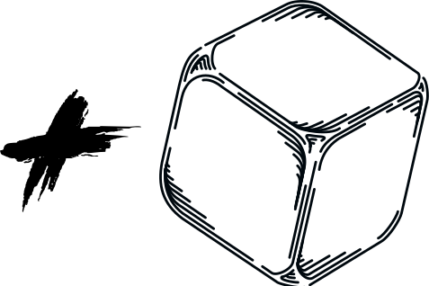
Ce symbole vous indique d’ajouter un dé à votre jet : prenez ensuite en compte le plus haut résultat pour déterminer la réussite de l’action.
Vos Compétences et vos Artefacts vous permettent ainsi de lancer des dés supplémentaires lors d’un jet de dés. Tant que le MJ considère que ces atouts vous aident dans l’action entreprise, ces ajouts de dés peuvent se cumuler.
Votre Voie peut également vous fournir des dés additionnels.
Règles d’emploi des Vocables
Employer un Vocable nécessite 1 point de Mana canalisé, et un jet de dé. Un personnage maîtrisant un Vocable, peut tenter n’importe quelle Versets propre à cette famille de magie. Il est aussi possible de devenir expert d’un Verset en particulier, et de gagner ainsi +1 dé au lancer lorsqu’on l’emploie.
Certains artefacts rares peuvent également conférer +1 dé au lancer pour un Vocable spécifique.
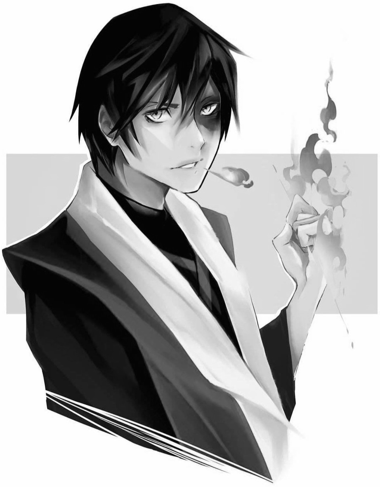
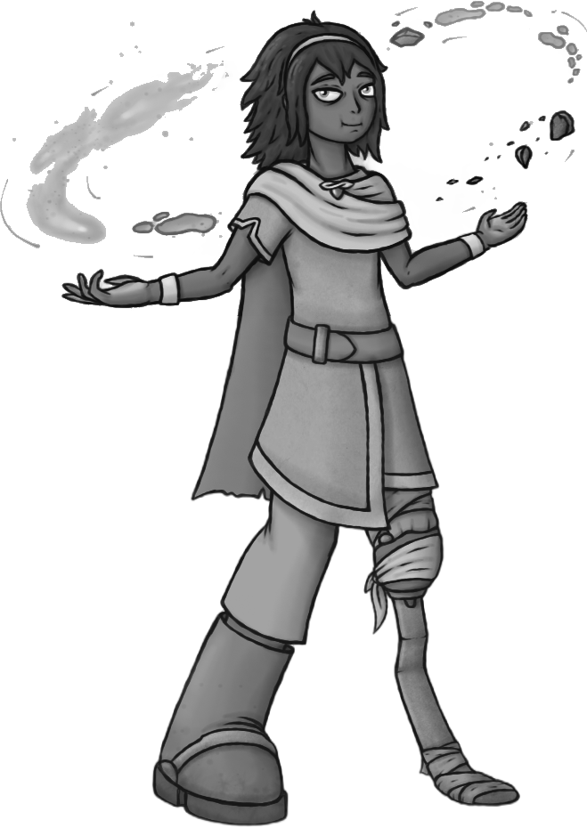
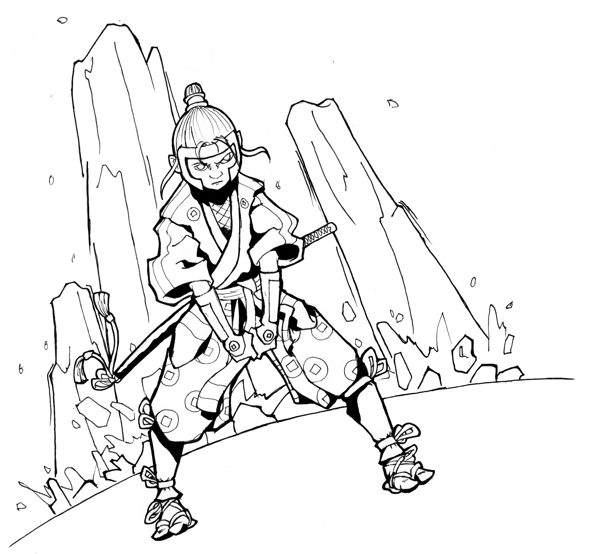
Santé
Section en cours de rédaction…
-> géré comme un RISQUE qui DOIT être explicité par le MJ avant un jet
Boucle de jeu
Dans Ori Mushi, le jeu alterne entre trois phases :
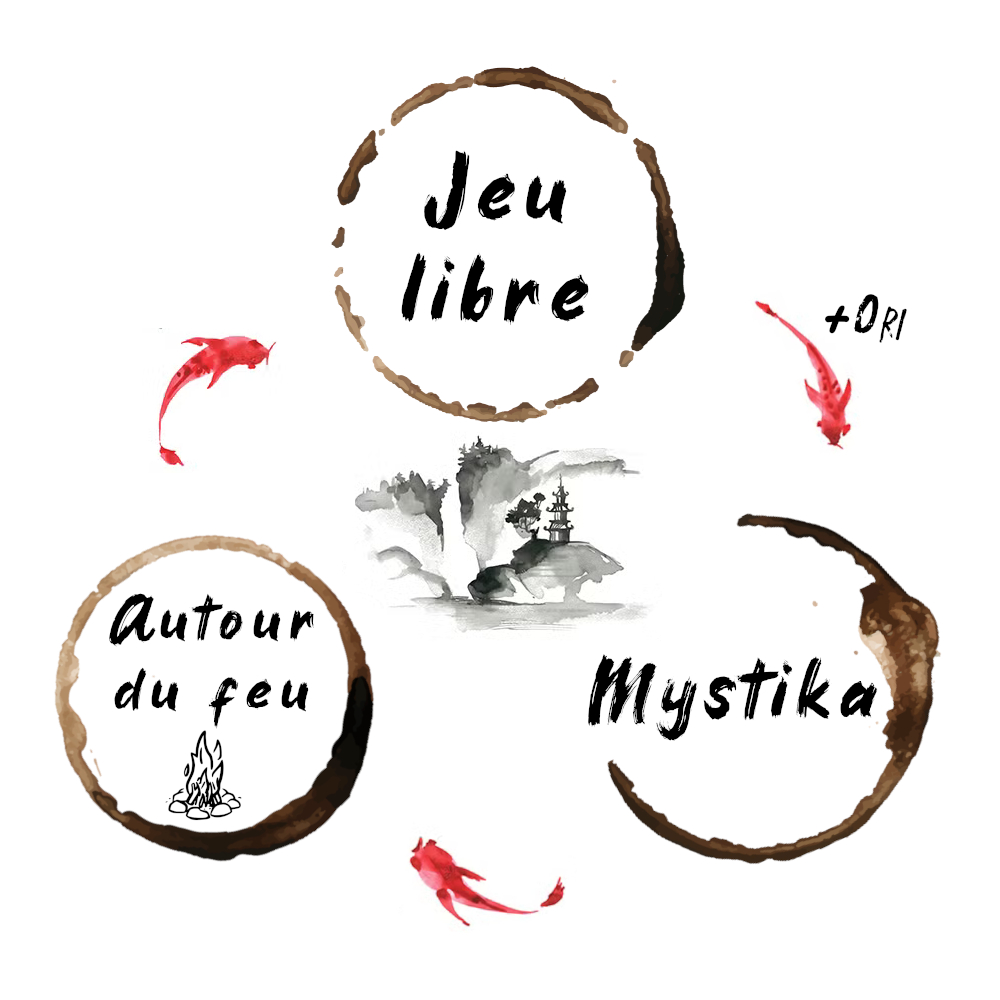
Jeu libre
Durant cette phase de jeu, chaque joueur incarne son komusō, et est totalement libre de ses actions et paroles. C’est le mode de jeu « classique » de la plupart des jeux de rôle.
L’un des vœux des komusō étant l’itinérance, ils voyagent sans cesse de lieu en lieu. À chaque fois que les komusō migrent d’un lieu pour se rendre dans un autre, passez ensuite successivement aux phases de jeu suivante :
- Répartition des Oris & progression
- Mystika, où les joueurs révèlent et détaillent les secrets des terres connues
- Autour du feu, un moment de roleplay entre komusō pour les joueurs
Oris & progression
Les Oris représentent la sagesse, l’élan de bonté, la force intérieure que n’importe qui peut développer.
La progression en Oris d’un komusō représente son gain d’expérience acquise en réalisant des actions en alignement avec son code moral, au fur et à mesures de ses aventures.
| Situation | Progression par aventure |
|---|---|
| Échec critique ⚀⚀ | +1 Ori |
| Agir selon les Vœux des komusō, et son Vœu Personnel | +1 Ori |
| Suivre ses critères de Progression de Voie | +1 Ori |
| Placer au moins une fois son komusō dans une situation délicate à cause de sa Mauvaise habitude | +1 Ori |
En dehors de l’échec critique, tous les gains d’Oris se font en fin de session de jeu, lorsque les komusō reprennent leur voyage.
Lorsque les personnages ont obtenus suffisamment d’Oris, et qu’ils satisfont les critères de leur Voie, ils changent de palier, et donc de feuille de Voie.
Le changement de palier se déroule au début d’une partie où au moins trois PJs présents satisfont le critère de passage au palier suivant de leur Voie. Tous les komusō changent alors de palier simultanément.
Ne fournissez pas aux joueurs de détails au préalable sur comment cela se déroule. Tout est détaillé dans le Guide du MJ.
Mystika
Durant cette petit temps en fin de partie, les joueurs vont définir collectivement les détails qui entourent certains secrets de l’univers d’Ori Mushi.
Le Mystika a lieu lorsque les komusō profitent des moments de repo de leur voyage pour déchiffrer des bas-reliefs antiques qu’ils ont recopié durant leurs aventures, ou pour lire des incunables, des livres interdits et uniques qu’ils ont récolté.
Reliques & secrets
L’examen de ces reliques est le rôle de l’Artiste-Conteur du groupe, à la fin de chaque aventure.
Une fois par voyage entre deux aventures, un Artiste-Conteur peut profiter des temps de repos pour déchiffrer un bas-relief antiques qu’il a recopié, ou un incunable.
Au terme de cet examen littéraire, il découvre un secret concernant les terres connues, correspondant au bas-relief ou livre déchiffré. Le MJ leur révèle lequel, puis débute une courte phase de narration partagée.
S’il n’y a pas d’Artiste-Conteur parmi les joueurs, alors l’examen des reliques et la découverte des secrets sont gérés par le groupe collectivement. S’il y a deux Artiste-Conteurs parmi les joueurs, alors laissez-les se mettre d’accord pour que l’un se charge des bas-reliefs antiques et l’autre des livres interdits. Un seul Secret peut être révélé par Mystika, mais chacun gagnera des Oris à chaque fois.
Narration partagée
Une bande son calme, poétique, envoûtante est idéale pour cette phase. Suggestions : Mushishi, Ori and the Blind Forest.
L’Artiste-Conteur prend en note sur sa feuille de Voie du secret révélé. Il aussi encouragé à prendre note, au dos de sa feuille de Voie, des détails inventés collectivement durant cette phase. Il pourra s’en inspirer pour de futures représentations de spectacles !
Gardez en têtes ces grands principes durant le Mystika :
- durant ces temps de narration partagée, vous êtes libres de créer n’importe quel élément de l’univers : lieux, personnages, événements…
- employez la technique du « oui et » : ne rentrez jamais en contradiction avec les éléments apportés par les autres joueurs, mais rebondissez dessus et étoffez-les.
- tout n’a pas à être cohérent : les reliques découvertes par les komusō relatent des histoires, pas forcément la Vérité. Elles peuvent même parfois se contredire.
- ce temps doit rester relativement courte, idéalement environ une demi-heure : c’est au MJ de l’animer et de s’assurer qu’elle ne traîne pas en longueur
Un joueur sera l’Arbitre durant cette phase. L’Artiste-Conteur est le premier à endosser ce rôle, puis il sera assumé par tous les joueurs à tour de rôle au fil des phases suivantes de Questions-Réponses. L’Artiste-Conteur est responsable de consigner qui a déjà été Arbitre, et à qui revient ce rôle à chaque fois.
Les phases de Questions-Réponses se déroulent ainsi :
- le MJ énonce la question posée
- à tour de rôle, chaque joueur propose une réponse, sauf l’Arbitre
- enfin, l’Arbitre choisit la réponse qu’il préfère, ou un mélange de réponses
Merveilles
Voici quelques-unes des merveilles que pourraient découvrir les PJs. L’Église de la Connaissance souhaitera se les approprier. Il s’agit pour la plupart de créations de Vitruve durant les Temps Antiques, mais pas seulement :
Le Gyroptère de Vitruve
cf. Gyroptère
La Tour de l’Infini
- Possède de nombreuses portes (la plupart fermées), s’ouvrant dans de nombreux lieux des terres connues
- c’est un lieu secret, que les komusō
- les portails nécessitent de l’algue-portail
- ⚠️ la nuit, une masse d’algue-portail s’y déplace d’étage en étage (façon cube gélatineux)
Le Théâtre des Cieux
Une sphère mécanique agricole
Capable de planter / labourer / biner / butter / sarcler / éclaircir les plantes Peut faire peur au 1er abord
Un moulin à énergie solaire
Ressemble à un moulin… mais tourne même quand il n’y a pas de vent !
Un mégaphone géant
Capable de diffuser un concert dans toute la vallée
Une chaudière souterraine géante
Alimentant les poêles de nombreuses maisons dans une région enneigée
Un aigle-Colosse volant
Inspi Les Mystérieuses Cités d’Or
Une longue-vue géante
Inventez les vôtre !
Autour du feu
Durant cette phase, les joueurs incarnent leurs komusō, au terme d’une journée de voyage. Ils se retrouvent traditionnellement autour d’un feu de camp. Si une phase Mystika vient d’avoir lieu, cette scène commence alors que leurs personnages viennent de découvrir un secret des terres connues.
Il s’agit d’une séquence d’un quart d’heure axée sur le roleplay, où les joueurs sont encouragés à :
- partager avec les autres komusō ce que leur personnage a ressenti durant leur dernière étape
- revenir sur ce que certains de leurs camarades ont fait
- discuter de leur mission : est-ce qu’il l’accomplissent correctement ? Est-ce qu’ils l’envisagent tous de la même manière ?
- évoquer les rêves et ambitions de chacun
- émettre des hypothèses sur les grands mystères des terres connues : Colosses, mushis, légendes…
Concluez cette phase ainsi :
Au cœur de la nuit, votre feu de camp s’éteint doucement. Qu’est-ce que vos personnages ont dans le cœur en se couchant ?
Durant cette phase, le MJ peut participer durant les "blancs" de la discussion pour décrire l’environnement autour des komusō, la lumière, les bruits, le vent… Il est aussi encouragé à diffuser une musique d’ambiance adaptée :
- Tir - Urd, Skuld & Verdandi
- Campfire Ambience with music - 1 Hour
- Campfire Stories | TTRPG Ambience Music | 1 Hour
- Campfire at Night - TTRPG relaxed BG Music - 1 Hour
PNJs
Les Colosses
Tel des golems, ils obéissent à ces trois principes :
- Préserver la vie
- Traverser le monde, pour déclamer les chants du Poète Endeuillé, et essaimer des mushis
- Obéir aux poètes endeuillés : les Poètes-Sorciers qui ont perdu des êtres chers, et qui agissent mûs par le chagrin que cela leur inspire
Nergal : lorsqu’il se réveille, il se sent perdu et seul. Une fois dressé debout, après quelques minutes, il décide d’aller à la rencontre de Bilgamesh. Il chante des Versets du Vocable de le Gravité.
Bilgamesh : c’est l’un des derniers Colosses actifs, et le seul qui n’a pas choisi de rester en retrait des humains. Il apprécie leur présence autour de lui. Il chante des Versets du Vocable des Plantes.
Les autres Colosses interviennent peu dans la campagne, mais sentez-vous libre d’en créer d’autres et de les faire intervenir dans vos aventures !
Mokabé
Daïmio vétéran; membre du Cénacle, le conseil des doyens komusō; gardien de la Tour de l’Infini
- Objectifs : atteint d’une dégénérescence bientôt fatale, il sait qu’il va mourir sous peu. Avant, il veut transmettre aux komusō ses derniers et plus importants enseignements.
- Attitude (guide de roleplay) :
- Liens avec autres PNJs : père de Rumiko, ami & conseiller d’Oma, ami d’enfance d’Hisaishi
Mae
Jeune marchande et couturière qui prend les choses en main au Temple aux Singes
- Objectifs (acte 1) :
- protéger et rassurer tout le monde
- sortir du temple où ils sont piégés
- vendre au marché les vêtements qu’elle confectionne
- Attitude (guide de roleplay) :
- Comment peut-elle aider les PJs ? :
- Liens avec autres PNJs :
Oma la Cueilleuse de Mots
Par la Grande Sculpteuse ! Un Oni ici ??
Une Poètesse-Sorcière, élue par les forestiers pour diriger le conseil des sages de Nippur. Vit au Moulin Des Cigognes
- Vocables : gravité (contrôle du papier façon Read or Die)
- Objectifs : s’opposer à l’influence grandissante de l’Église de la Connaissance dans la région
- Attitude (guide de roleplay) :
- Comment peut-elle aider les PJs ? :
- Comment s’opposera-t-elle aux PJs ? :
- Liens avec autres PNJs : mentor de Rumiko; amie de Mokabé
Rumiko
- Objectifs : devenir daïmio, suivre les vœux des komusō, faire perdurer cet ordre, que son père soit fière d’elle
- Voie : Maître-Artisan -> spécialité ?
- Attitude (guide de roleplay) : de caractère joyeux; peut devenir très sérieux; initialement méfiante envers les PJs
- Comment peut-elle aider les PJs ? :
- Comment s’opposera-t-elle aux PJs ? :
- Liens avec autres PNJs : fille de Mokabé; komusō apprentie d’Oma
Osamu Tenpo
Évêque-ingénieur chargé de l’évangélisation des Basses-Plaines Accompagné et secrètement d’arquebusiers
- Objectifs : étendre l’influence de l’Église de la Connaissance; combattre les croyances envers les mushis
- Attitude (guide de roleplay) :
- Comment peut-il aider les PJs ? :
- Comment s’opposera-t-il aux PJs ? :
- Liens avec autres PNJs :
Bilgamesh
Colosse encore actif, géant humanoïde arpentant les Basses Plaines.
- Objectifs :
- Attitude (guide de roleplay) :
- Comment peut-il aider les PJs ? :
- Comment s’opposera-t-il aux PJs ? :
- Liens avec autres PNJs :
Gilga
La légende raconte qu’il commandait aux Colosses et qu’il aurait vaincu les Onis. Il a consommé des mnémocoques et perdu la mémoire…
- Objectifs :
- retrouver le Colosse semeur d’onimame
- Attitude (guide de roleplay) :
- Comment peut-il aider les PJs ? :
- Comment s’opposera-t-il aux PJs ? :
- Liens avec autres PNJs :
Hisaishi Inoue
Capitaine en chef des bateliers
- Objectifs :
- Attitude (guide de roleplay) :
- Comment peut-il aider les PJs ? :
- Comment s’opposera-t-il aux PJs ? :
- Liens avec autres PNJs :
Cécil
Archiviste, bibliothécaire, ancien élève de Mokabé
- Objectifs :
- Attitude (guide de roleplay) :
- Comment peut-il aider les PJs ? :
- Comment s’opposera-t-il aux PJs ? :
- Liens avec autres PNJs :
Jinbeï
Successeur de Mokabé. A un sabre à la ceinture, vestige de son passé de guerrier, mais il est soudé.
- Objectifs :
- Attitude (guide de roleplay) : débonnaire, bon vivant / buveur, volontiers impertinent / moqueur, parfois impulsif
- Comment peut-il aider les PJs ? :
- Comment s’opposera-t-il aux PJs ? :
- Liens avec autres PNJs :
Griddish
https://www.reddit.com/r/neography/comments/a9yd0d/i_made_a_griddy_cipher_where_letters_smush/
| A | B | C | D | E | F | G | H | I | J | K | L | M |
|---|---|---|---|---|---|---|---|---|---|---|---|---|
| N | O | P | Q | R | S | T | U | V | W | X | Y | Z |
lepoeteendeuille : lepoeteendeuille
LEPOETEENDEUILLE : LEPOETEENDEUILLE
Dans le jeu, cet alphabet est celui des Temps Antiques.
L’idée est d’employer ce script sur les feuilles de personnage pour y dissimuler des secrets que les joueurs décrouvriront durant la partie.
Ressources
Illustrations
S’inspirant de Sventovia du Grümph, nous vous encourageons à imprimer des images au préalable, pour faciliter l’immersion des joueurs.
Vous trouverez dans ce PDF de multiples illustrations pour les komusō, les PNJs, ainsi que différents lieux, créatures & artefacts OriMushi-illustrations.pdf.
Voici également quelques illustrateurs inspirants :
Ambiance musicale
Quelques suggestions de bande sons originales : Okami, Princess Mononoke, Furyo / Merry Christmas Mr. Lawrence, Journey, Creatures of Ava Blue Eye Samurai | Official Soundtrack --> à insérer comme suggestion pour chaque phase
La galerie d’art de Nouvelle-Galles du Sud a commandé une musique atmosphérique pour son exposition « Japan Supernatural » d’art traditionnel et contemporain : https://www.artgallery.nsw.gov.au/listen/supernatural/#music
Beautiful Piano -Poems of the Moon - Japanese Fantasy Inspired BGM
Bande son YouTube : Ori Mushi
Illustrations sélectionnées - non encore placées
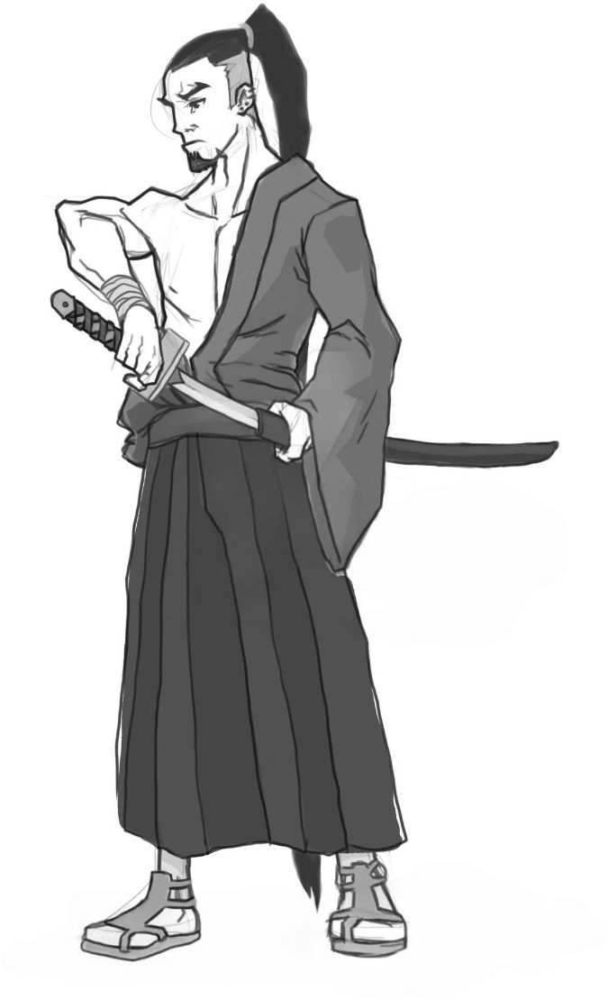
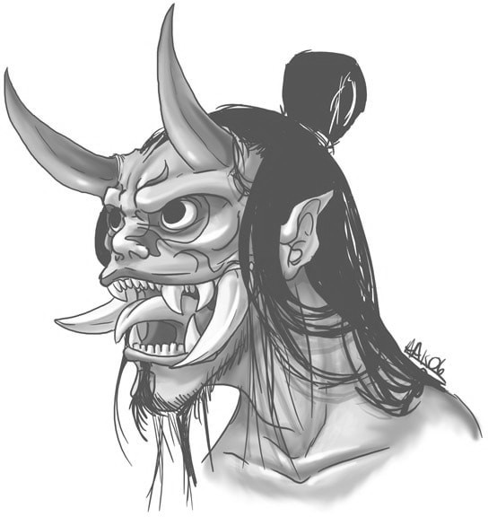
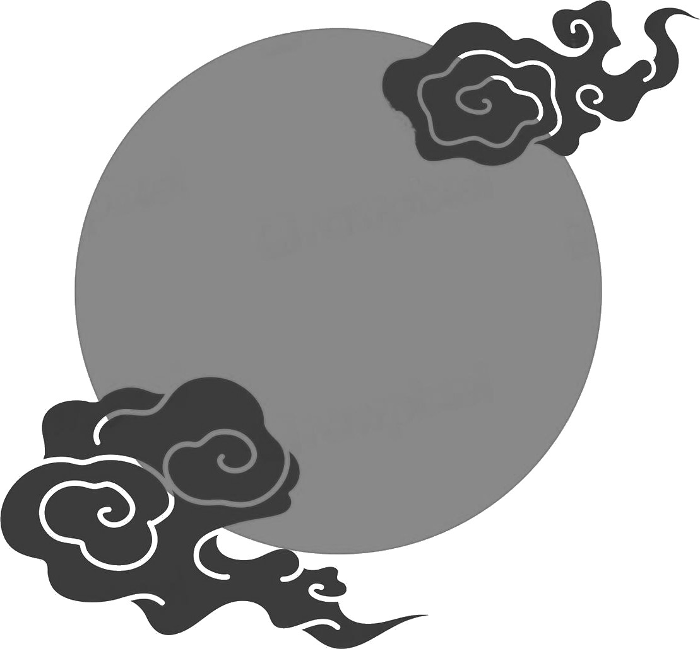
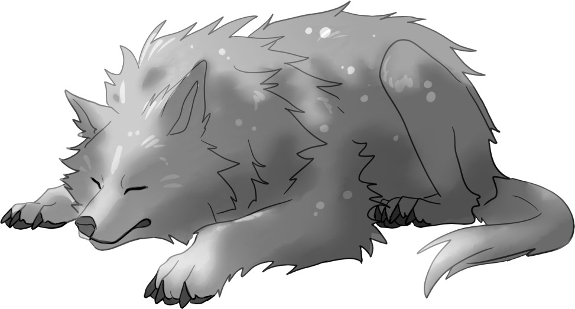
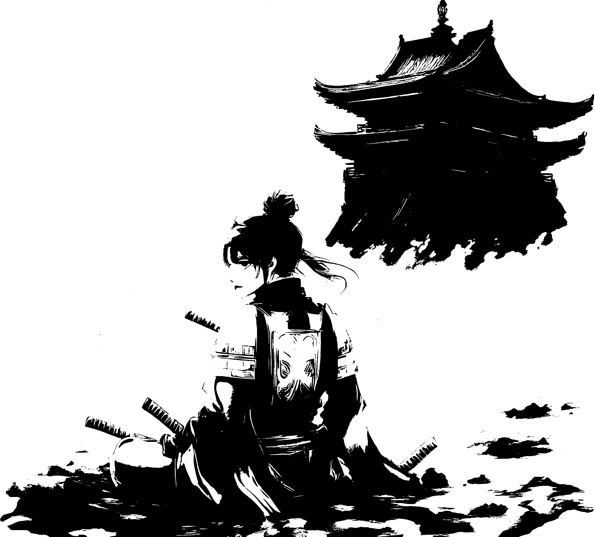
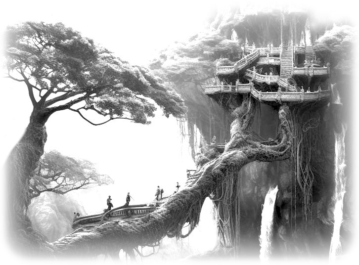
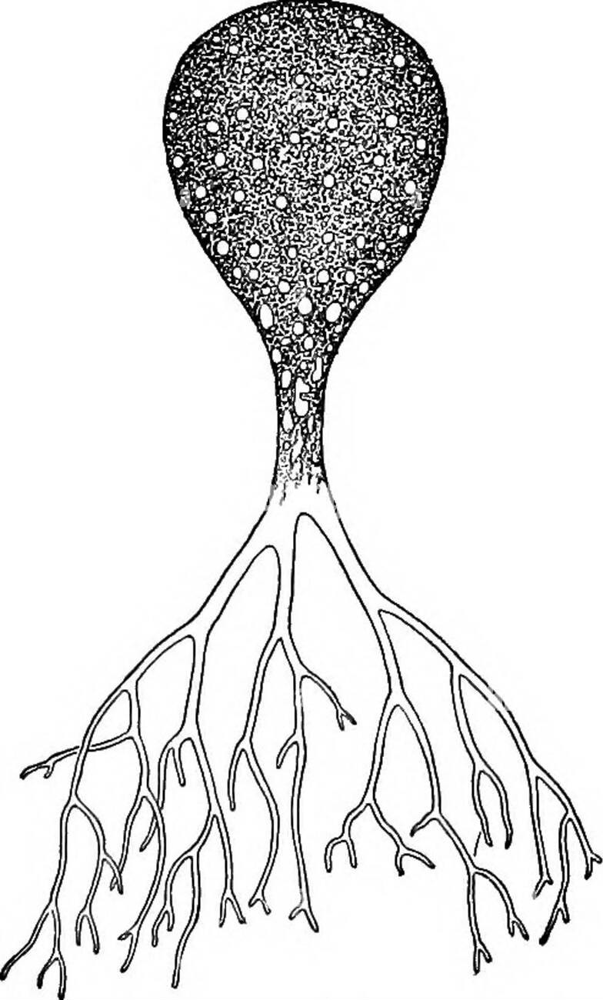
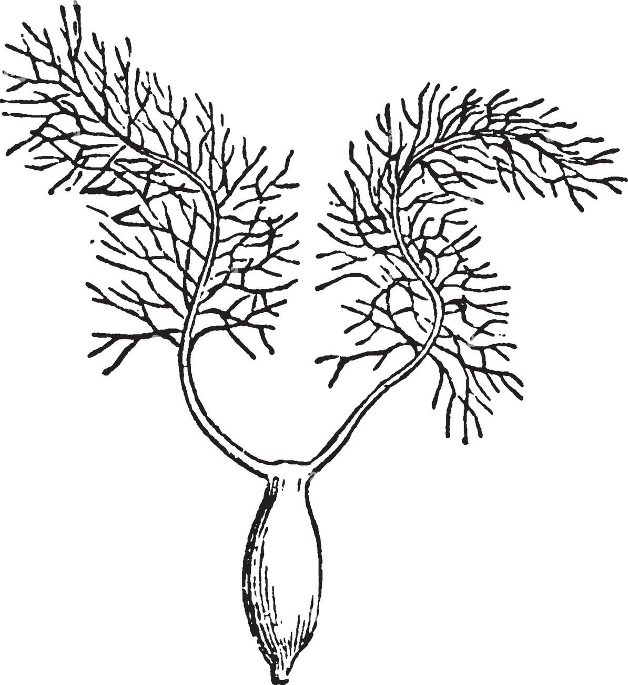
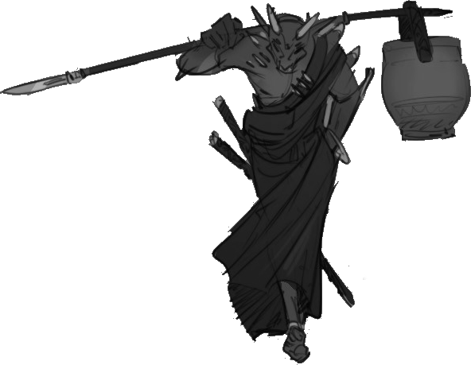
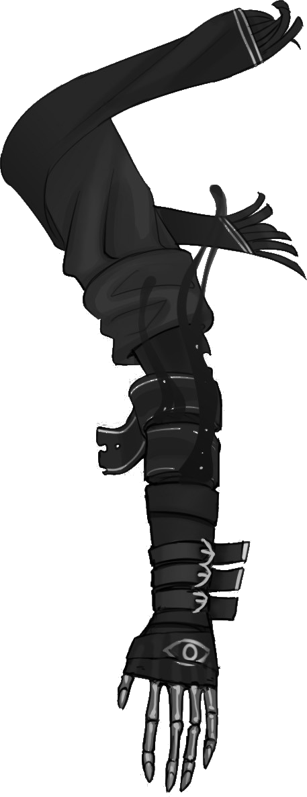
Images searches: Creative Commons via Google, avec filtres "il y a moins d’un mois" + Licences Creative Commons :
Glossaire
- Campagne
- ensemble de parties de JdR se suivant pour former une continuité, où l’on retrouve les même personnages dans le même univers
- Hopepunk
- un sous-genre des littératures de l’imaginaire, conçu à l’opposé des dystopies amorales ou violentes, où la bonté est un acte politique et de rébellion, et les personnages ne se résignent pas face à un univers hostile. Page Wikipedia dédiée. Voici quelques œuvres que j’estime appartenir à ce genre et que je recommande : les bandes dessinées Lightfall, Mouse Guard, Nimona et SAGA; les films Nausicaä & Princesse Mononoké; la série Firefly; les jeux vidéos Brothers - A Tale of Two Sons & Journey.
- JdR
- Jeu de rôle
- MJ
- Meneur ou Meneuse de Jeu
- One-shot
- Court scénario de jeu de rôle avec une fin prévue, joué en une unique session de jeu
- PJ
- Personnage d’une Joueuse ou d’un Joueur
- Roleplay
- action d’incarner son personnage, généralement en s’appliquant à parler et agir comme il le ferait
- Table ouverte
- fonctionnement d’une campagne de jeu de rôle où d’une partie à l’autre ce ne sont pas toujours les même joueurs autour de la table.
Toutes les idées qui n’ont pas pu aboutir dans cette version
Atlas des joueurs
Un atlas de 4-6 pages est remis aux joueurs en début de campagne. Cet atlas détaille brièvement l’histoire et la géographie des terres connues. Des annotations manuscrites mentionnent quelques mystères, et des petits encarts de réponse permettent aux joueurs d’y consigner leurs découvertes.
Site web
- partage de haïkus, avec mise en page jolie (proc-gen) de ces textes
- partage de personnages
- partage de lieux sur carte partagée (mentionner
#hashtagdédié pour les partager sur réseaux sociaux)
Licence, sources & remerciements

Ori Mushi a été conçu par Lucas Cimon, il est placé sous license Creative Commons Attribution-NonCommercial-ShareAlike 4.0.
Ce jeu est diffusé à prix libre. Si vous souhaitez me soutenir, vous pouvez me faire un don sur lucas-c.itch.io. Les fichiers sources ayant permis de générer ce PDF sont disponibles sur GitHub. Cette version est la v0.5.
Je serais ravi d’avoir vos retours si vous jouez à ce jeu ! Racontez-moi comment s’est passée votre partie via un commentaire lucas-c.itch.io ou sur mon blog.
Merci enfin aux développeurs des logiciels libres employés pour réaliser ce jeu : le navigateur Firefox, le logiciel de dessin Gimp, l’éditeur de texte Notepad++, le lecteur de PDF Sumatra PDF, le language de programmation Python, les bibliothèques de code mistletoe & weasyprint, le logiciel d’agrandissement d’image nunif/waifu2x.
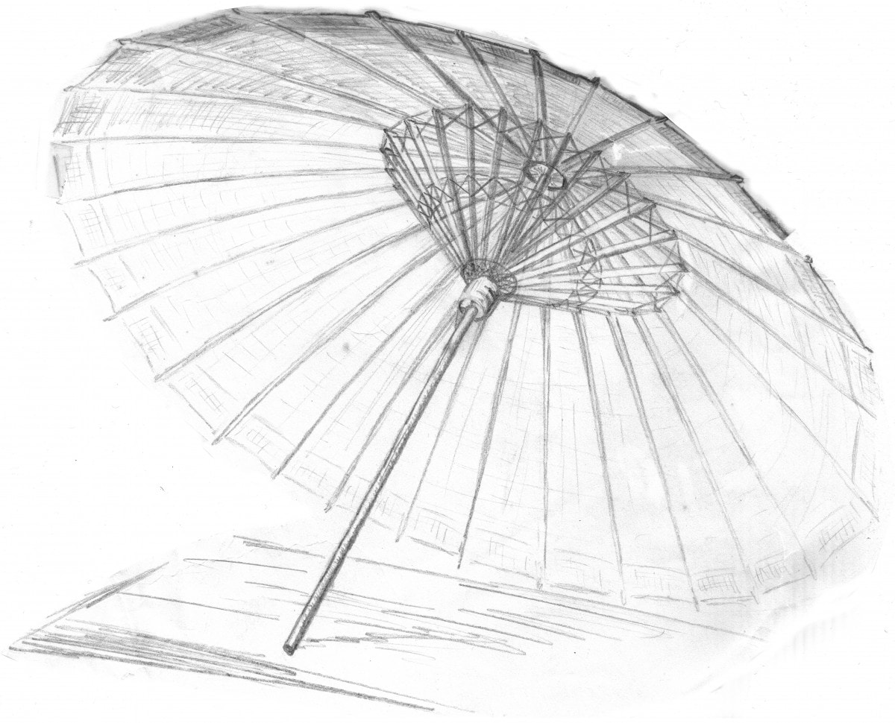
Polices : Ink Free & Odachi & Xangda Shiny.
Illustrations employées :
- Epic Chibi Ninja par dmr12890 - CC BY-NC-SA 3.0
- Kyoshi Earthbender Lineart par Aedo Sama - CC BY-NC-SA 3.0
- magic circle 2 par NNao - CC BY-NC-SA 3.0
- Kappa koopa & Noh Demon par weremagnus - CC BY-NC 3.0
- HUNTING - Familiar Wolf par Kindya-Island - CC BY-NC 3.0
- Nature waterfall 2 par MHoltsmeier - CC BY 3.0
- Zuko fanart par CodeTheCod - CC BY 3.0
- League of Legends - Shen / Blood Moon par Spellshuei - CC BY 3.0
- Demon blood par aMiGoS21 - CC BY 3.0
- Quick samurai sketch par hidanbasher - CC BY 3.0
- Pirate Map 1 par TheStockWarehouse - CC BY 3.0
- DnD Stone Elemental par Lady of Hats - CC0
- Japanese Style Link Art Border Frame @vecteezy.com
- parapluie-écran-chinois @pixabay.com
- Decorative Ying Yang sign @freesvg.org - domaine public
- Image from "A handbook of cryptogamic botany" (1889) - domaine public
{kind=link}